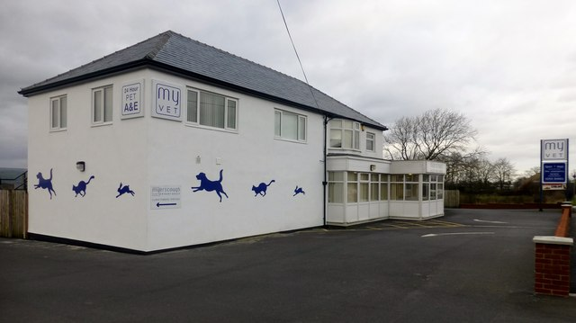

Sligo Animal Rescue
Our History
History is the systematic study of the past. As an academic discipline, it analyzes and interprets evidence to construct narratives about what happened and explain why it happened, focusing primarily on the human past. Some theorists categorize history as a social science, while others see it as part of the humanities or consider it a hybrid discipline. Similar debates surround the purpose of history, for example, whether its main aim is theoretical, to uncover the truth, or practical, to learn lessons from the past. In a slightly different sense, the term history refers not to an academic field but to the past itself or to individual texts about the past. Historical research relies on primary and secondary sources to reconstruct past events and validate interpretations. Source criticism is used to evaluate these sources, assessing their authenticity, content, and reliability. Historians integrate the perspectives of several individual sources to develop a coherent narrative. Different schools of thought, such as positivism, the Annales school, Marxism, and postmodernism, have distinct methodological approaches. History is a broad discipline encompassing many branches. Some focus on specific time periods, such as ancient history, while others concentrate on particular geographic regions, such as the history of Africa. Thematic categorizations include political history, social history, and economic history. Branches associated with specific research methods include quantitative history, comparative history, and oral history.
Click here to learn more!Meet the Team
Founder: Mary
An organizational founder is a person who has undertaken some or all of the formational work needed to create a new organization, whether it is a business, a charitable organization, a governing body, a school, a group of entertainers, or any other type of organization. If there are multiple founders, each can be referred to as a co-founder. If the organization is a business, the founder is usually an entrepreneur. If an organization is created to carry out charitable work, the founder is generally considered a philanthropist. A number of specific issues have been identified in connection with the role of the founder. The founder of an organization might be so closely identified with that organization, or so heavily involved in its operations, that the organization can struggle to exist without the founder's presence.[1] "One practical way to cope with overreliance on a founder is to distribute management duties so that others are clearly responsible for important operations. If the founder is on the nonprofit's board, part of the solution is to make sure that the board is diverse, balanced, and regularly infused with new blood".
Click here to learn more!Vet: Samantha
A veterinarian (vet) or veterinary surgeon is a medical professional who practices veterinary medicine. They manage a wide range of health conditions and injuries in non-human animals. Along with this, veterinarians also play a role in animal reproduction, health management, conservation, husbandry and breeding and preventive medicine like nutrition, vaccination and parasitic control as well as biosecurity and zoonotic disease surveillance and prevention. Most veterinarians work in a clinical setting or bricks and mortar practice, treating animals directly. Other vets work as mobile vets[1] offering veterinary services and treating patients in their clients home. Veterinarians may be involved in general practice, treating animals of all types; they may be specialized in a specific group of animals such as companion animals, livestock, zoo animals or equines; or may specialize in a narrow medical discipline such as surgery, dermatology or internal medicine. As with other healthcare professionals, veterinarians face ethical decisions about the care of their patients.[2] Current debates within the profession include the ethics of certain procedures believed to be purely cosmetic or unnecessary for behavioral issues, such as declawing of cats, docking of tails, cropping of ears and debarking on dogs.
Click here to learn more!Animal Carer: Arthur
The verb was first recorded in 1755. It was derived from the noun volunteer, in c. 1600, "one who offers himself for military service," from the Middle French voluntaire.[3] In the non-military sense, the word was first recorded during the 1630s. The word volunteering has more recent usage—still predominantly military—coinciding with the phrase community service.[3][4] In a military context, a volunteer army is a military body whose soldiers chose to enter service, as opposed to having been conscripted. Such volunteers do not work "for free" and are given regular pay.
Click here to learn more!Animal Rescuer: Joe
Animal rescuers take the animals and care for the animals in need. Animal rescue organizations have also been created to rescue and rehabilitate wild animals, such as lions, tigers, and cheetahs; a job which is normally shared or backed by zoos and other conservation charities. These animals are normally released back into the wild where possible, otherwise they will remain in captivity and, for endangered species, may be used in breeding programs.Widely recognized as an umbrella organization for animal rescue groups, Petfinder.org is an online, searchable database of more than 13,000 shelters and adoption agencies across the United States, Canada and Mexico.[2] The American Kennel Club maintains a list of contacts, primarily within breed clubs, with information on breed rescue groups for purebred dogs in the United States.
Click here to learn more!Our Volunteers

During this time, America experienced the Great Awakening. People became aware of the disadvantaged and realized the cause for movement against slavery.[5] In 1851, the first YMCA in the United States was started, followed seven years later by the first YWCA. During the American Civil War, women volunteered their time to sew supplies for the soldiers and the "Angel of the Battlefield" Clara Barton and a team of volunteers began providing aid to servicemen. Barton founded the American Red Cross in 1881 and began mobilizing volunteers for disaster relief operations, including relief for victims of the Johnstown Flood in 1889.regular pay.
Click here to learn more!Our Biggest Rescue
The horse (Equus ferus caballus)[2][3] is a domesticated, one-toed, hoofed mammal. It belongs to the taxonomic family Equidae and is one of two extant subspecies of Equus ferus. The horse has evolved over the past 45 to 55 million years from a small multi-toed creature, Eohippus, into the large, single-toed animal of today. Humans began domesticating horses around 4000 BCE, and their domestication is believed to have been widespread by 3000 BCE. Horses in the subspecies caballus are domesticated, although some domesticated populations live in the wild as feral horses. These feral populations are not true wild horses, which are horses that never have been domesticated. There is an extensive, specialized vocabulary used to describe equine-related concepts, covering everything from anatomy to life stages, size, colors, markings, breeds, locomotion, and behavior.
Click here to learn more!Our Biggest Rescue: Update
Horses are adapted to run, allowing them to quickly escape predators, and possess a good sense of balance and a strong fight-or-flight response. Related to this need to flee from predators in the wild is an unusual trait: horses are able to sleep both standing up and lying down, with younger horses tending to sleep significantly more than adults.[4] Female horses, called mares, carry their young for approximately 11 months and a young horse, called a foal, can stand and run shortly following birth. Most domesticated horses begin training under a saddle or in a harness between the ages of two and four. They reach full adult development by age five, and have an average lifespan of between 25 and 30 years.
Click here to learn more!